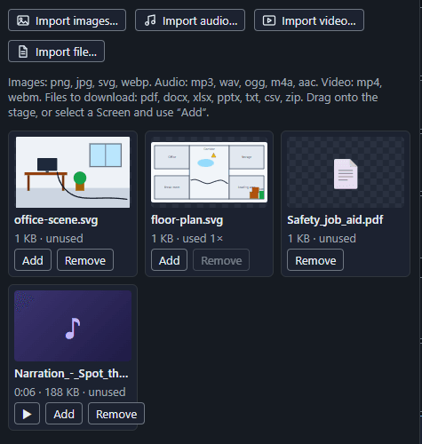
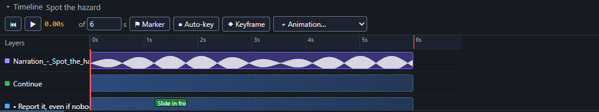
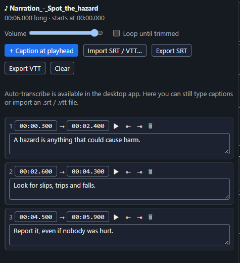
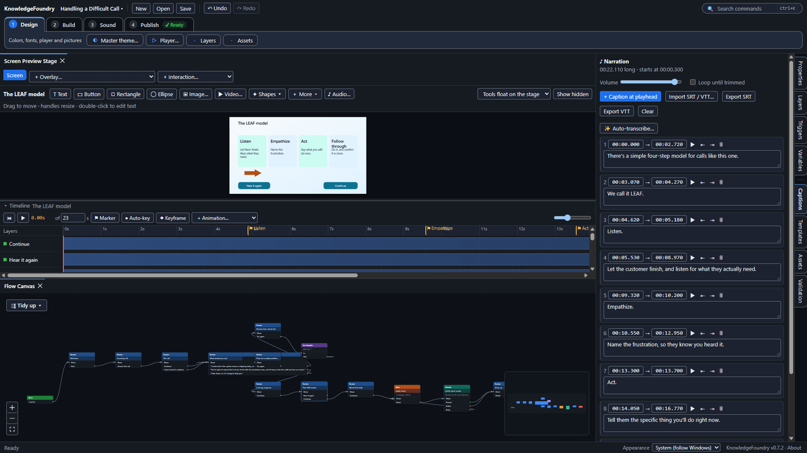

Add narration and captions
- In the Assets tab click Import audio… and choose your narration file (mp3, wav, ogg, m4a or aac). Click ▶ on its card to listen.
- Select the Screen, then click Add on the audio card (or drag it onto the stage). It appears as a purple row on the Timeline at the playhead, with its waveform. Drag it to change when it starts.
- Open the Captions tab and choose one way to make captions: • ✨ Auto-transcribe… (desktop app): pick a quality and click Create captions. The first time, the speech model downloads once (45 to 260 MB); after that it works offline and nothing is uploaded. • Type them while you listen: play the Timeline and press + Caption at playhead at each line, then type the text. • Import SRT / VTT… if you already have a caption file.
- Read the captions against the audio and fix any mistakes. Times can be edited as
0:12.5. - Courses with audio open with a Start button (browsers require a click before sound can play).
Steps 1 and 2, the audio card in the Assets tab, with its play button, Add and Remove:

After Add, the audio is a purple row on the Timeline with its waveform:

Steps 3 and 4, the Captions tab after captions were imported:

